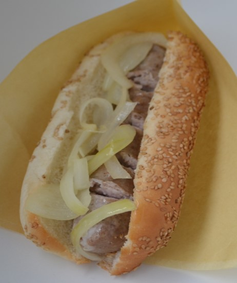
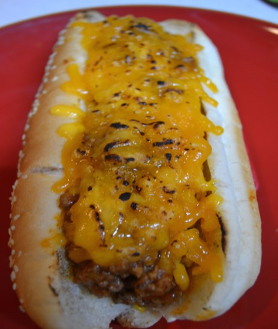
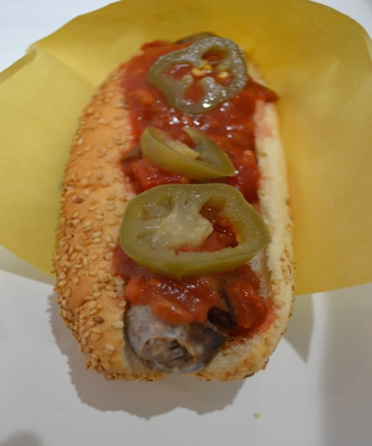
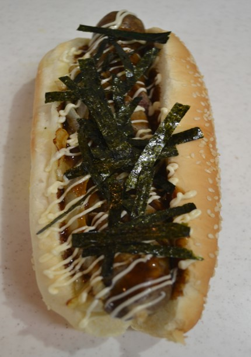
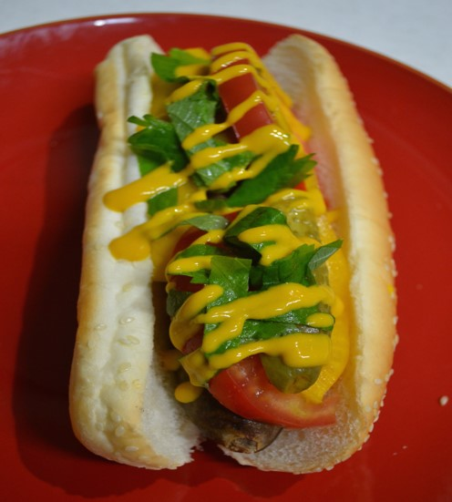
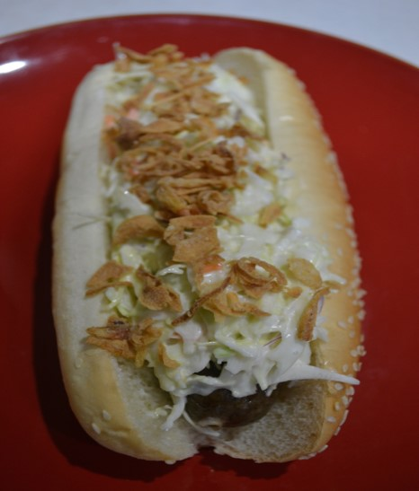
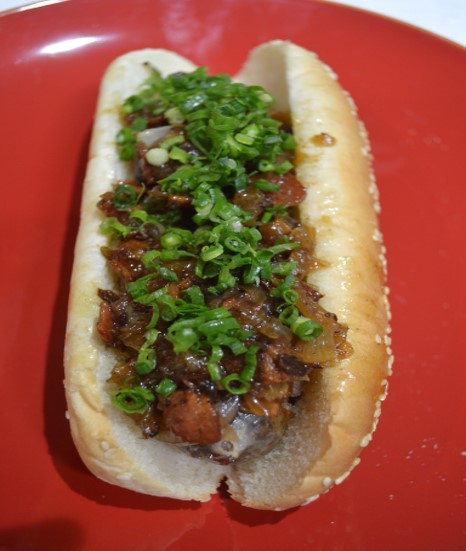
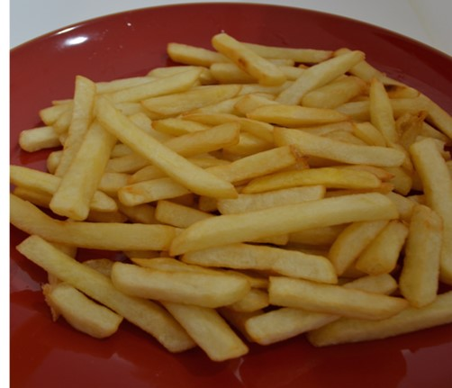
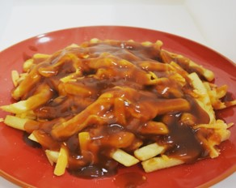

メニュー

ホットドック
自家製あらびきソーセージを使ったベーシックなホットドック
¥450-(税込み)

チリビーンズホットドック
１番人気！お肉ったっぷりチリビーンズにチェダーチーズをかけて炙りました。
¥600-(税込み)

サルサドッグ
サルサソースとハラペーニョをトッピング（辛さは中辛です）辛いですが、さっぱり食べられます。
¥550-(税込み)

テリヤキホットドッグ
テリヤキソース、マヨネーズ、のり、炒めた玉ねぎの相性は抜群です。
¥550-(税込み)

野菜たっぷりホットドック
トマト、パプリカ、大葉、ピクルス入りのヘルシーなホットドック、マスタード塩のシカゴスタイルで食べるのがおススメです。
¥600-(税込み)

コールスローホットドッグ
コールスローサラダとフライドオニオンがのったホットドッグです。サクサクのフライドオニオンがコールスローサラダと良く合います。
¥550-(税込み)

ベーコンジャムホットドッグ
ベーコンと玉ねぎで作ったジャムがのっています。甘さと塩気がとても合います。リピーター率高いです。
¥600-(税込み)

フライドポテト
揚げたてのフライドポテト（塩）
¥250-(税込み)
その他のフレーバー付きにもできます。
¥300-(税込み)

プーティン
揚げたてのポテトの上にチェダーチーズと熱々のグレービーソースをかけてあるカナダの代表料理。ハマること間違いなし。
レギュラーサイズ（２～３人前）
¥500-(税込み)
ハーフサイズ（１人前）
¥350-(税込み)
- プーティン補足説明
- プーティンとは、プーティン（英語発音puːˈtiːn/）（仏: Poutine）（仏語発音[putin]プティーヌ）は、フライドポテトにグレイビーソースと粒状のチーズカード（英: Cheese Curds、仏: Fromage en grains）をかけたファーストフード形式の食べ物。代表的なカナダ料理である。また、アカディア人のダンプリング状の伝統料理の総称でもある。